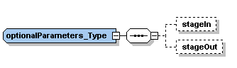
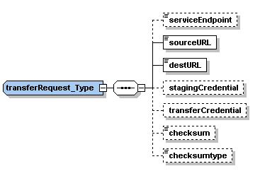

The factory service allows a client to instantiate a workspace as a WSRF resource by using the create operation with workspace metadata and a deployment request. The factory service's WSDL can be viewed online. It references a separate types schema.
You may also send optional parameters alongside the metadata and deployment request in the create operation.
Currently supported optional parameters are for pre- and post-deployment staging requests. These are support by transfer plugins to the workspace service that you may need to install separately.

You may specify a stage-in or stage-out directive, or both. The stageIn request will be executed before workspace propagation and the stageOut request will be executed when the TransportReady state has been reached (see this explanation of the workspace state lifecycle).
Within each staging request you must supply the source URL, and the destination URL:

Optionally, you may supply a service endpoint URL that the staging adapter would contact on the client's behalf. For example, an RFT factory URL. The HTTP transfer functionality does not need a service URL but RFT and SRM do.
Currently in TP1.3, if using the HTTP transfer functionality, you may optionally specify a checksum and checksumtype (you must supply either zero or both of these) in order to verify the transfer succeeded. Typically supported values for checksumtype are 'md5' and 'sha1' (if the service administrator has not disabled one or the other).
Currently in TP1.3, if using the HTTP transfer functionality, you may optionally transfer a compressed gzip image. This must have the suffix ".gz" and must actually be a gzip image (the service uses the Linux 'file' command to verify this). Note that if you take advantage of this the destination URL must have the ".gz" suffix. But the file to specify for propagation in the metadata would end up not having the ".gz" suffix. This functionality can be disabled.
Optionally, you may supply delegated credential EPRs that will be used for the transfer. The staging credential is the credential to be used for contacting the specified service endpoint and the transfer credential is the credential to be used for the actual transfer.
For example, using the RFT staging plugin, you could supply the URL to the RFT service endpoint, the source and destination of the file to be transferred, the EPR of the delegated credential to use to contact RFT (this must be a credential delegated to a Delegation Service colocated with the workspace service), and the EPR of the delegated credential that will tell RFT what credential to invoke the transfer under (this must be a credential delegated to a Delegation Service colocated with the RFT service).
Very often, the credential used to access a transfer service and the credential used to invoke the transfers are the same ones. To facilitate this common case, the sample Java client distributed with the workspace service includes (optional) support for contacting a delegation service, delegating your credential, and filling in the necessary elements in your transfer request.
_NIMBUS_CENTER2_COLUMN_END _NIMBUS_FOOTER1 _NIMBUS_FOOTER2 _NIMBUS_FOOTER3